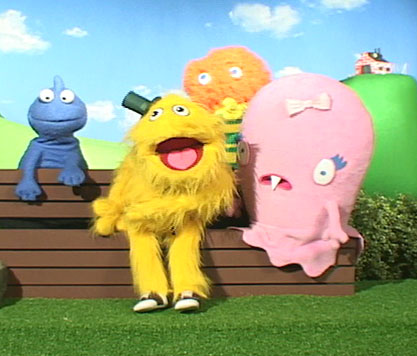
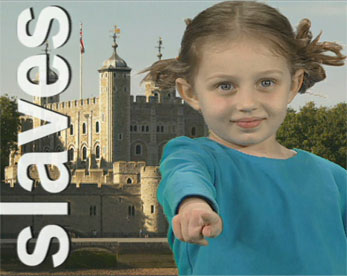
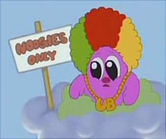
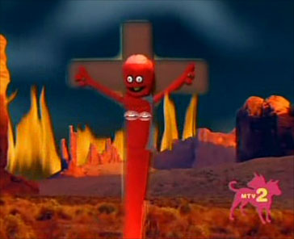
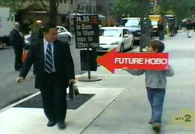
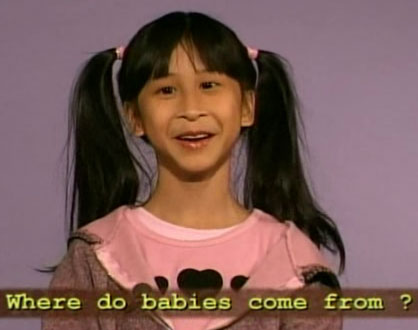

|
 Wonder ShowzenMTV2 is a fast-paced entertainment network largely inspired by the Internet and video games. It brings a fast-paced mix of music programs and young-adult lifestyle features into approximately 59 million homes. The channel serves as a unit of Viacom, one of the world's leading creators of television programming, wireless services, and interactive broadband media content across all platforms, including Nickelodeon, CMT, and VH1. Sneaking through this enormous hose pipe is Wonder Showzen, a not-exactly-for-kids program which most closely resembles Sesame Street, Blue's Clues, Teletubbies, Dora The Explorer and Mister Rogers' Neighborhood all smashed together. Between animation, documentary footage, and live-action video segments featuring actual children, specific themes and emotions are directly injected into the developing subconscious of its youngest viewers. Telegraphed messages of hatred, racism, paranoia, animal death, drug use, white people, Mexico, how hot dogs are really made, how slaves built America, and how using one's imagination is dangerous -- to name but a few. The unspoken experience of this program inspires images of wide-eyed toddlers staring at the television, growing increasingly fragile and freaked out over thirty minutes, while Mom putters about in the other room, just happy to have a reliable babysitter. Portions of the program feel like the extended "Altered State of Druggachusetts" sequence from Mr. Show -- and even David Cross once described Wonder Showzen as "the funniest, most subversive comedy on American T.V. right now". The creators of Wonder Showzen, John Lee and Vernon Chatman, met at San Francisco State. Chatman, a writer for The Chris Rock Show and That's My Bush is also the voice of Towlie from South Park. The program started as a brief eight-minute tape which got shopped around to various media outlets. Lee told The Portland Mercury it's a struggle to get what he wants on the air: "The show we really want to make -- that has one hundred percent of what we want -- would never make it on TV. It would be so raw, even we wouldn't want to watch it". Wonder Showzen enjoys experimenting with forms which tests the limits of children and adults. In an first-season episode called Patience, viewers are treated to a lengthy sequence of looping segments which are both painfully slow and borderline annoying. At the halfway mark of the program, the entire sequence is reversed -- playing backwards for fifteen minutes. The program is hosted by Chauncy -- a fluffy yellow muppet with a wiggling top hat -- whose presence anchors each episode. Chauncy links together the individual sketches and animations, incrementally morphing inflammatory and misleading messages into bits of wisdom the viewer can take away. His adventures invariably advocate experimenting with drugs, selling your friends for money, or killing and cannibalizing God. A recurring feature is Beat Kids, an uncomfortably-named kid-on-the-street showcase of young reporters out in the real world, looking for the scoop. One boy goose-steps and stomps around Manhattan dressed as Adolf Hitler, waving a microphone and asking grownups, "What do you think is wrong with the youth of today?" Adults are momentarily stunned by the visceral disconnection between the child's clothing and his playful demeanor -- but they don't know how to respond to the boy's offer of letting them stay at his "summer camp".
Unfortunately, the Hitler kid episode aired during Yom HaShoah, Holocaust Remembrance Day. Caryl Stern -- Holocaust survivor and associate national director of the ADL -- told one reporter, "There are enough things to do in the world that one doesn't have to dress up as Hitler for humor". After the Jewish Anti-Defamation League complained, the segment was removed. Salon reports that white supremacists on various message boards have also puzzled over the show's racial humor. Both the NAACP and the Aryan Nation have expressed dismay and displeasure with Wonder Showzen. Catalyst, a mouthpiece for the Catholic League fired off a vitriolic press release, citing the show as anti-Christian. Unfortunately, the document's anti-Showzen remarks only make the program look more entertaining: 
One of the best regular segments involves 1950s-era documentary footage spliced together in a manner echoing instructional "how things are made" features from Mister Rogers' Neighborhood. In Wonder Showzen, children recite a rapidfire sequence of endlessly hilarious one-liners narrating their trip to the hot dog factory. Pigs are unloaded from a truck, then progressively killed and chopped up. Excruciating closeups of meat and filth push like Play-Doh through grinders, straining into large vats of liquid shit. That's what my grandma did on the coffee table, one child remarks. A worker hangs hot dogs and sausage links on a rack in a huge oven. That guy's a weiner smoker -- I can smell it on him. Then footage of the factory break room is shown: adults twisting rubber hoses around their arms and shooting up heroin. Finally, actual hot dogs emerge from the other end of the factory, spilling onto conveyor belts against the sound of agonizing screams, machine gun fire and animal death.
The killing of animals is regularly evangelized on Wonder Showzen -- both directly and indirectly. During the song "Animal Dance," footage loops forward and back to the sound of a jazzy kazoo: snakes devouring rabbits, crocodiles chomping on gazelles, enormous wobbling rhino penises during mating, the splushy, clumsy live birth of yak, red bulbous mouse tumors in a medical lab, and a dead zebra carcass lingering in the sun. To suggest the lengthy passage of time, instead of cutting to a spinning clock on the wall, Wonder Showzen dissolves to a dead fox in the forest, rapidly decomposing in time lapse over several weeks. In a storyline about an anthropomorphic number "2" trying to kill itself, a large black beetle is strapped into a miniature electric chair and set ablaze.  From time to time, a disturbing video effect warps a portion of the screen for a split second. An interview with a cherubic Asian girl gathers horrifying, demonic momentum when her eyeballs suddenly appear closer together than they were a moment ago. The visual is never addressed outright: she continues her brief monologue about where babies come from, and the segment moves on. Other times, the audio track is slowed to a repetitive growl or layered in echoing loops, highlighting one small boy's screams of pills! pills! pills! pills! Wonder Showzen is at its most effective when you can't fully pinpoint why you feel so paranoid and awful. Entertainment Weekly and Time magazine both attached Wonder Showzen to their best-of lists for 2005. In an era where "subversive" entertainment includes titles like Will & Grace and Punk'd, Viacom insisted Wonder Showzen be prefixed with a warning titlecard similar to that featured at the beginning of South Park, and the team obliged: Wonder Showzen contains offensive, despicable content that is too controversial and too awesome for actual children. The stark, ugly, profound truths Wonder Showzen exposes may be soul crushing to the weak of spirit. If you allow a child to watch this show, you are a bad parent or guardian. |